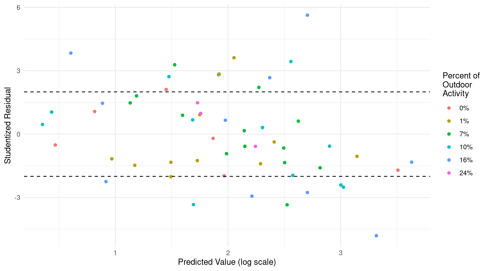
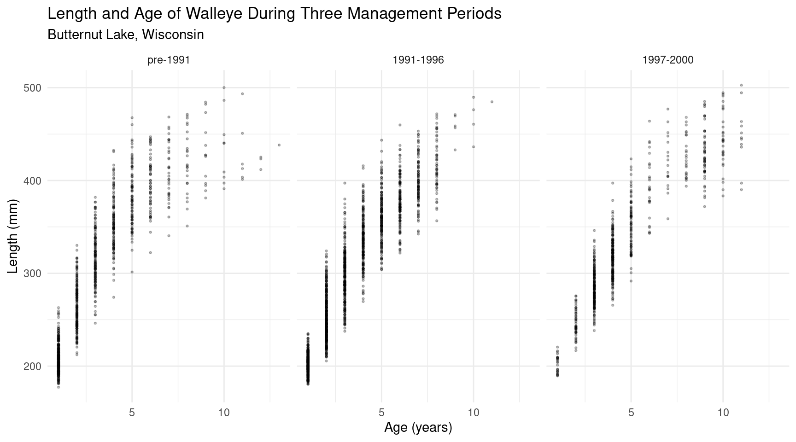
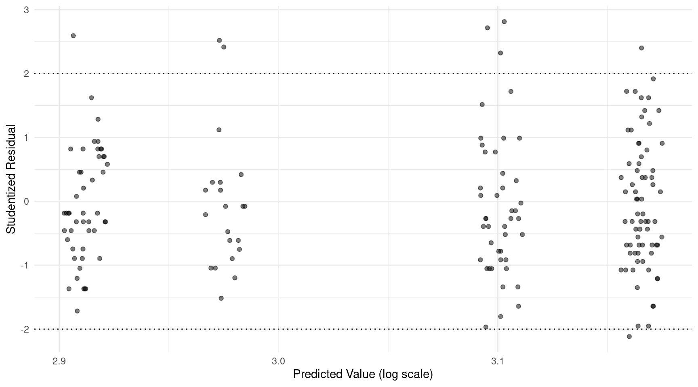
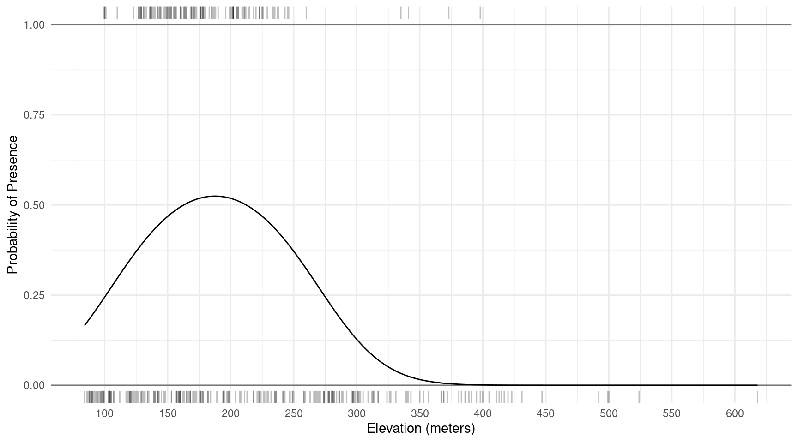
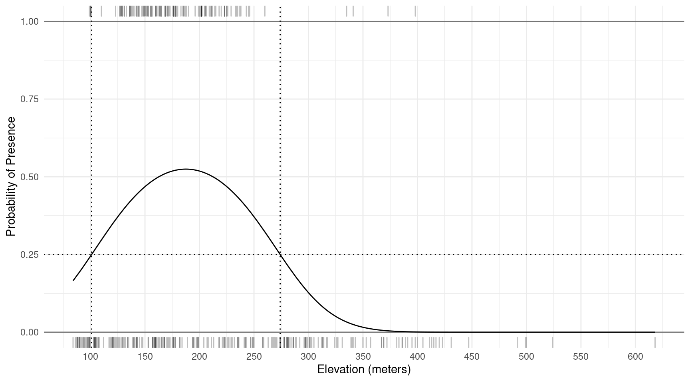
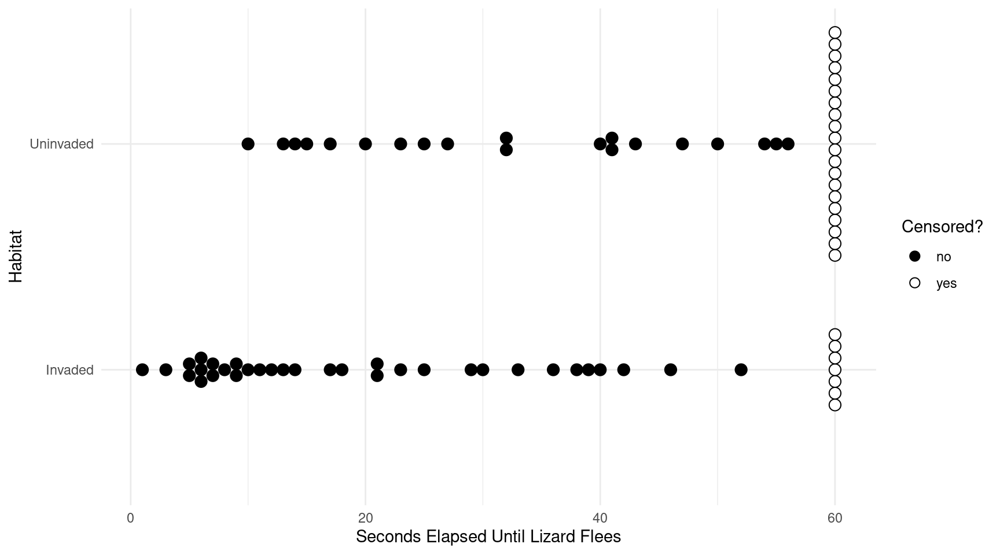
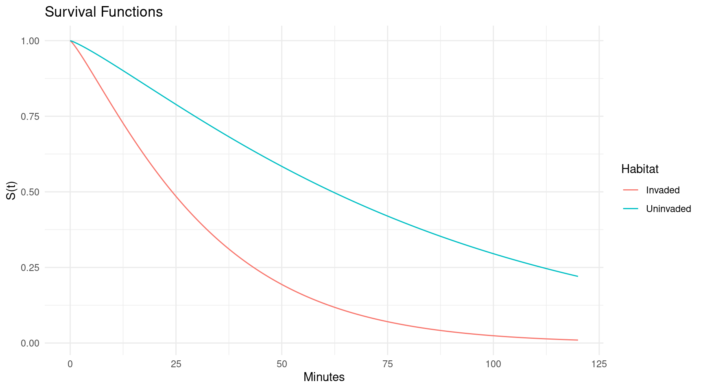
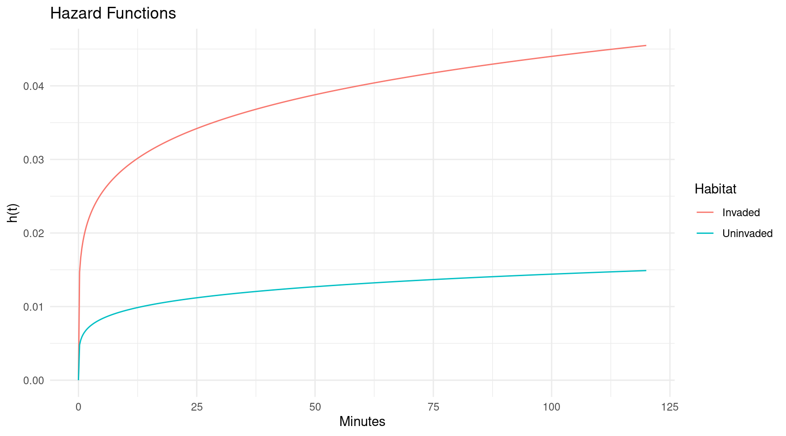

Over-dispersion and Quasi-likelihood, Marginal Effects, the Delta Method, and Survival Analysis
Statistics 516, Homework 4 (Solutions)
You can also download a PDF copy of this homework assignment.
Physiological Responses of Shore Crabs to Ship Noise
The data in the data frame CrabShip in the
Stat2Data package are from an experiment that
investigated physiological responses of shore crabs (Carcinus
maenas) to ship noise.1 Captive crabs were randomly assigned to one
of two treatment groups. One group of crabs was exposed to a recording
of 7.5 minutes of ship noise. The other group was exposed to a recording
of 7.5 minutes of ambient harbor noise. The researchers observed the
rate of oxygen consumption of each crab as well as its mass.2 The plot
below shows the data.
library(ggplot2)
library(Stat2Data)
data(CrabShip)
p <- ggplot(CrabShip, aes(x = Mass, y = Oxygen, color = Noise)) +
geom_point() + theme_minimal() + theme(legend.position = c(0.1, 0.8)) +
labs(y = "Oxygen Consumption (micromoles/hour)", x = "Mass (g)")
plot(p) From the plot it appears that ship noise tends to increase oxygen consumption rate, and that larger crabs tend to have higher oxygen consumption rates. Assume that the goal is to model how ship noise affects oxygen consumption rate and how this depends on the mass of the crab. Suppose we model the data using the nonlinear regression model \[ E(O_i) = \begin{cases} \beta_a m_i^\gamma, & \text{if the noise source is ambient}, \\ \beta_s m_i^\gamma, & \text{if the noise source is ship}, \end{cases} \] where \(O_i\) and \(m_i\) are the oxygen consumption and mass for the \(i\)-th observation, respectively, and \(\beta_a\), \(\beta_s\), and \(\gamma\) are the parameters of the model. The model specifies that the expected oxygen consumption is proportional to a power transformation of mass, with the constant of proportionality depending on the treatment condition (i.e., noise source). To estimate this nonlinear model we can first estimate a linear model with \(\gamma\) = 0.5 to get starting values for \(\beta_a\) and \(\beta_s\), and then use these estimates as starting values in the nonlinear model.3
library(dplyr)
m_start <- nls(Oxygen ~ case_when(
Noise == "ambient" ~ beta_a * Mass,
Noise == "ship" ~ beta_s * Mass,
), start = list(beta_a = 1, beta_s = 1), data = CrabShip)
summary(m_start)$coefficients Estimate Std. Error t value Pr(>|t|)
beta_a 2.914 0.1739 16.76 2.093e-17
beta_s 4.507 0.1875 24.04 4.746e-22m_final <- nls(Oxygen ~ case_when(
Noise == "ambient" ~ beta_a * Mass^gamma,
Noise == "ship" ~ beta_s * Mass^gamma
), start = list(beta_a = 2.9, beta_s = 4.5, gamma = 0.5),
data = CrabShip)
summary(m_final)$coefficients Estimate Std. Error t value Pr(>|t|)
beta_a 17.8658 7.5707 2.360 2.476e-02
beta_s 26.3527 10.9220 2.413 2.193e-02
gamma 0.5607 0.1036 5.411 6.615e-06Here is a plot of the estimated model.
d <- expand.grid(Noise = c("ambient","ship"),
Mass = seq(0, 85, length = 500))
d$yhat <- predict(m_final, newdata = d)
p <- p + geom_line(aes(y = yhat), data = d)
plot(p)
The model looks reasonable, but it is not easy to interpret in terms of
the individual model parameters. But it may be useful to interpret the
model in terms of linear and nonlinear functions of the model
parameters. In what follows be sure you use the final model with the
estimated \(\gamma\) parameter (i.e.,
m_final) and not the first model (i.e.,
m_start) which was just a working model used to obtain
starting values for the parameters.
For the noise source to affect the expected oxygen consumption we need \(\beta_s \neq \beta_a\) or, equivalently, \(\beta_s - \beta_a = 0\). So rejecting the null hypothesis that \(\beta_s - \beta_a = 0\) will conclude a statistically significant effect of the noise treatment. This can be done several ways. The quantity \(\beta_s - \beta_a\) is a linear function of the model parameters, so by estimating it with
linconyou will get a test statistic for the test of the null hypothesis above. You can also estimate \(\beta_s - \beta_a\) using thedmethodfunction which will provide the same inferences.4 Report output given by these two functions to verify that they give the same result. Another approach is to use a \(F\) test statistic by using theanovafunction and specifying a null model. This is very similar to the likelihood ratio test but uses a different test statistic (thetest = "LRT"is not needed foranovahere as it will default to using the \(F\) test statistic when applied to anlsobject). The null model can be written as \[ E(O_i) = \beta m^{\gamma}, \] since if \(\beta_s = \beta_a\) then we can remove the subscript and just call the common parameter \(\beta\). Note that for your starting value of \(\beta\) you could use the average of the estimates of \(\beta_s\) and \(\beta_a\). Report the test statistic and p-value for this test.Solution: Here are the tests of the null hypothesis that \(\beta_s - \beta_a = 0\) using
linconanddmethod. First I will convert theNoisevariable to a character variable and re-estimate the model to avoid bug inmargeffthat will be fixed soon.CrabShip$Noise <- as.character(CrabShip$Noise) m_final <- nls(Oxygen ~ case_when( Noise == "ambient" ~ beta_a * Mass^gamma, Noise == "ship" ~ beta_s * Mass^gamma ), start = list(beta_a = 2.9, beta_s = 4.5, gamma = 0.5), data = CrabShip) library(trtools) lincon(m_final, a = c(-1, 1, 0))estimate se lower upper tvalue df pvalue (-1,1,0),0 8.487 3.584 1.177 15.8 2.368 31 0.02431dmethod(m_final, pfunc = "beta_s - beta_a", pname = c("beta_a", "beta_s", "gamma"))estimate se lower upper tvalue df pvalue 8.487 3.584 1.462 15.51 2.368 Inf 0.01789To make the test and confidence interval from
dmethodagree with that fromlinconwe can manually set the degrees of freedom as follows.dmethod(m_final, pfunc = "beta_s - beta_a", pname = c("beta_a", "beta_s", "gamma"), df = 31)estimate se lower upper tvalue df pvalue 8.487 3.584 1.177 15.8 2.368 31 0.01789Unfortunately there is a bug in
dmethodthat only applies the specified degrees of freedom to the confidence interval and not the p-value calculation. That will be fixed soon in an update. Next I will specify \(F\) test of the same null hypothesis.m_null <- nls(Oxygen ~ beta * Mass^gamma, start = list(beta = 22, gamma = 0.6), data = CrabShip) summary(m_null)$coefficientsEstimate Std. Error t value Pr(>|t|) beta 34.5804 21.5239 1.607 0.11797 gamma 0.4476 0.1549 2.890 0.00687anova(m_null, m_final)Analysis of Variance Table Model 1: Oxygen ~ beta * Mass^gamma Model 2: Oxygen ~ case_when(Noise == "ambient" ~ beta_a * Mass^gamma, Noise == "ship" ~ beta_s * Mass^gamma) Res.Df Res.Sum Sq Df Sum Sq F value Pr(>F) 1 32 86452 2 31 34998 1 51454 45.6 1.5e-07 *** --- Signif. codes: 0 '***' 0.001 '**' 0.01 '*' 0.05 '.' 0.1 ' ' 1In a linear model this test would give the same p-value as the test based on the \(t\) test statistic as reported by
lincon. But this is not the case in a nonlinear regression model. There is evidence that in these cases the \(F\) test is more accurate, although frequently the two tests will give the same result.Suppose we want to estimate the difference in the expected oxygen consumption between the two treatment conditions. This can be written as \(\beta_sm^{\gamma} - \beta_am^{\gamma}\) or \((\beta_s - \beta_a)m^{\gamma}\). Since this depends on the mass of the crab (\(m\)), a useful approach might be to estimate the difference for an average crab. The mean crab mass in this study is about \(m\) = 53 grams. There are a couple of ways that you can estimate this difference in R. One would be to estimate it as a discrete marginal effect using the
margefffunction, and another is to use the delta method with thedmethodfunction. Estimate this difference using both functions, being sure to report the estimate, standard error, and confidence interval. You should obtain the same result using these two functions.Solution: Here is the marginal effect estimated using the
margefffunction.margeff(m_final, a = list(Noise = "ship", Mass = 53), b = list(Noise = "ambient", Mass = 53))estimate se lower upper tvalue df pvalue 78.62 11.53 55.1 102.1 6.816 31 1.232e-07And here is the marginal effect estimated using
dmethod.dmethod(m_final, pfunc = "(beta_s - beta_a) * 53^gamma", pname = c("beta_a", "beta_s", "gamma"))estimate se lower upper tvalue df pvalue 78.62 11.53 56.01 101.2 6.816 Inf 9.335e-12The marginal effect discussed in the previous problem can also be framed as a percent change or difference. This is defined as \[ \frac{\beta_sm^{\gamma} - \beta_am^{\gamma}}{\beta_am^{\gamma}} \times 100\% \] which will tell us what percent larger the expected oxygen consumption is for a crab in the ship noise condition versus the ambient noise condition. Estimate this marginal effect for an average crab with a mass of 53 grams using the
margefffunction, and also estimate it using thedmethodfunction, being sure to report the estimate, standard error, and confidence interval from each function. You should obtain the same results using these two functions.Solution: Here are the estimates of the percent difference in the expected oxygen consumption from the
margeffanddmethodfunctions.margeff(m_final, type = "percent", a = list(Noise = "ship", Mass = 53), b = list(Noise = "ambient", Mass = 53))estimate se lower upper tvalue df pvalue 47.5 8.75 29.66 65.35 5.429 31 6.273e-06dmethod(m_final, pfunc = "100 * (beta_s*53^gamma - beta_a*53^gamma) / (beta_a*53^gamma)", pname = c("beta_a", "beta_s", "gamma"))estimate se lower upper tvalue df pvalue 47.5 8.75 30.35 64.65 5.429 Inf 5.661e-08Suppose a researcher was interested in how quickly the expected oxygen consumption increases with mass. The relationship is not linear so this rate of change depends on the mass of the crab. But we could estimate the rate of change for an average crab with a mass of \(m\) = 53 grams. This is the “instantaneous” marginal effect of mass at a mass of \(m\) = 53 grams. Estimate this quantity using the
margefffunction for each of the two treatment conditions. Report the estimates, standard errors, and confidence interval. Also estimate these quantities using thedmethodfunction by using the fact that the instantaneous marginal effects for mass for the ship and ambient conditions can be shown to be equal to \(\beta_s\gamma m^{\gamma - 1}\) and \(\beta_a\gamma m^{\gamma - 1}\), respectively.5Solution: The “instantaneous” marginal effects can be estimated as follows using the
margeffanddmethodfunctions.margeff(m_final, delta = 0.001, a = list(Noise = c("ship","ambient"), Mass = 53 + 0.001), b = list(Noise = c("ship","ambient"), Mass = 53))estimate se lower upper tvalue df pvalue 2.583 0.4811 1.601 3.564 5.368 31 7.478e-06 1.751 0.3181 1.102 2.400 5.504 31 5.065e-06dmethod(m_final, pfunc = "beta_s*gamma*53^(gamma-1)", pname = c("beta_a", "beta_s", "gamma"))estimate se lower upper tvalue df pvalue 2.583 0.4811 1.64 3.526 5.368 Inf 7.965e-08dmethod(m_final, pfunc = "beta_a*gamma*53^(gamma-1)", pname = c("beta_a", "beta_s", "gamma"))estimate se lower upper tvalue df pvalue 1.751 0.3181 1.127 2.374 5.504 Inf 3.716e-08You can use the
dmethodfunction to estimate both marginal effects at the same time by creating an expression that returns both values.dmethod(m_final, pfunc = "c(beta_s,beta_a)*gamma*53^(gamma-1)", pname = c("beta_a", "beta_s", "gamma"), fname = c("ship","ambient"))estimate se lower upper tvalue df pvalue ship 2.583 0.4811 1.640 3.526 5.368 Inf 7.965e-08 ambient 1.751 0.3181 1.127 2.374 5.504 Inf 3.716e-08The
dmethodfunction has an optional argumentfnamewhich works like thecnameargument for thecontrastfunction.
Swedish Speed Limit Study — Revisited
Recall the Swedish speed limit study from the previous homework assignment. As in the previous homework the following will format the data for modeling.
library(SMPracticals)
library(dplyr)
library(tidyr)
data(limits)
limitstudy <- limits %>%
rename(limit_1961 = lim1, limit_1962 = lim2, y_1961 = y1, y_1962 = y2) %>%
pivot_longer(cols = -day, names_to = c(".value", "year"), names_sep = "_") %>%
mutate(limit = factor(limit, levels = c(0,1), labels = c("no","yes")))
head(limitstudy)# A tibble: 6 × 4
day year limit y
<fct> <chr> <fct> <int>
1 1 1961 no 9
2 1 1962 no 9
3 2 1961 no 11
4 2 1962 no 20
5 3 1961 no 9
6 3 1962 no 15Here is another way to visualize the data using a dot plot.
p <- ggplot(limitstudy, aes(x = limit, y = y)) +
theme_minimal() + geom_dotplot(binaxis = "y", binwidth = 1,
stackdir = "center", position = position_dodge()) +
labs(x = "Speed Limit Posted", y = "Number of Accidents") +
facet_wrap(~ year)
plot(p) Here is the Poisson regression model you used in the previous homework
assignment.
Here is the Poisson regression model you used in the previous homework
assignment.
m <- glm(y ~ limit + year, family = poisson, data = limitstudy)
summary(m)$coefficients Estimate Std. Error z value Pr(>|z|)
(Intercept) 3.16513 0.02294 137.977 0.0000000
limityes -0.18893 0.03547 -5.327 0.0000001
year1962 -0.06394 0.03335 -1.917 0.0551916In what follows you will consider inferences based on this model while also dealing with possible over-dispersion.
Explain why the Poisson regression model specified above exhibits over-dispersion based on (a) a residual plot and (b) the residual deviance. Be sure to include the residual plot and the residual deviance in your answer.
Solution: First consider the residual plot. Mine might be a bit more fancy than yours.
set.seed(123) d <- data.frame(p = predict(m), r = rstudent(m)) p <- ggplot(d, aes(x = p, y = r)) + theme_minimal() + geom_jitter(height = 0, width = 0.01, alpha = 0.5) + labs(x = "Predicted Value (log scale)", y = "Studentized Residual") + geom_hline(yintercept = c(-2, 2), linetype = 3) plot(p)Note that you could also use something simple like
plot(predict(m), rstudent(m)). It looks like there are more residuals larger than two in absolute value than we would expect if there was no over-dispersion. Here is how we could compute the proportion of residuals with absolute values greater than two.mean(abs(rstudent(m)) > 2)[1] 0.2391So almost 24% of the residuals have absolute values of more than two. The residual deviance is also a bit larger (relative to the degrees of freedom) than we like to see.
summary(m)Call: glm(formula = y ~ limit + year, family = poisson, data = limitstudy) Deviance Residuals: Min 1Q Median 3Q Max -3.743 -1.391 -0.361 1.037 4.892 Coefficients: Estimate Std. Error z value Pr(>|z|) (Intercept) 3.1651 0.0229 137.98 <2e-16 *** limityes -0.1889 0.0355 -5.33 1e-07 *** year1962 -0.0639 0.0333 -1.92 0.055 . --- Signif. codes: 0 '***' 0.001 '**' 0.01 '*' 0.05 '.' 0.1 ' ' 1 (Dispersion parameter for poisson family taken to be 1) Null deviance: 624.98 on 183 degrees of freedom Residual deviance: 582.39 on 181 degrees of freedom AIC: 1478 Number of Fisher Scoring iterations: 4The residual deviance is more than three times the residual degrees of freedom.
Poisson regression assumes that \(\text{Var}(Y_i) = E(Y_i)\). This is a property of the Poisson distribution. Over-dispersion is when \(\text{Var}(Y_i) > E(Y_i)\). As we discussed in class, one approach to dealing with over-dispersion for Poisson regression is to use quasi-likelihood and relax the variance structure to \(\text{Var}(Y_i) = \phi E(Y_i)\) where \(\phi\) is a dispersion parameter which allows for some patterns of over-dispersion.6 Estimate the model above using this quasi-likelihood approach. Create a residual plot like you did in the previous problem and comment briefly if you think this quasi-likelihood approach was effective at dealing with over-dispersion. Report the estimates, standard errors, and confidence intervals for the model parameters. Compare these to what you obtained in the previous homework and discuss briefly what has (or has not) changed and how.
Solution: Here is how we can estimate the model using quasi-likelihood with the variance structure specified above.
m.quasi <- glm(y ~ limit + year, family = quasipoisson, data = limitstudy) cbind(summary(m.quasi)$coefficients, confint(m.quasi))Estimate Std. Error t value Pr(>|t|) 2.5 % 97.5 % (Intercept) 3.16513 0.04209 75.207 1.815e-138 3.0816 3.24659 limityes -0.18893 0.06507 -2.903 4.150e-03 -0.3173 -0.06212 year1962 -0.06394 0.06118 -1.045 2.974e-01 -0.1840 0.05583For comparison here are the estimates, standard errors, and confidence intervals without using quasi-likelihood.
cbind(summary(m)$coefficients, confint(m))Estimate Std. Error z value Pr(>|z|) 2.5 % 97.5 % (Intercept) 3.16513 0.02294 137.977 0.0000000 3.1199 3.209786 limityes -0.18893 0.03547 -5.327 0.0000001 -0.2587 -0.119636 year1962 -0.06394 0.03335 -1.917 0.0551916 -0.1294 0.001376Note that the estimates are the same, but when using quasi-likelihood the standard errors are larger resulting in wider confidence intervals. This also affects the values of the test statistics (they are smaller in absolute value when using quasi-likelihood) which reduces the p-values. When we fail to account for over-dispersion this usually causes the standard errors to be underestimated, so we might assume that this is the case here when not using quasi-likelihood. Here is the residual plot when using quasi-likelihood.
set.seed(123) d <- data.frame(p = predict(m.quasi), r = rstudent(m.quasi)) p <- ggplot(d, aes(x = p, y = r)) + theme_minimal() + geom_jitter(height = 0, width = 0.01, alpha = 0.5) + labs(x = "Predicted Value (log scale)", y = "Studentized Residual") + geom_hline(yintercept = c(-2, 2), linetype = 3) plot(p) This is a significant improvement. The proportion of residuals with absolute values is much less.
mean(abs(rstudent(m.quasi)) > 2)[1] 0.04348It is difficult to see if there is any clear trend in the residuals. There might be a bit more variability for higher predicted values, but the trend is not very pronounced.
In the previous homework assignment you estimated (a) the expected number of accidents with and without a posted speed limit each year and (b) the rate ratio for describing the relationship between whether or not a limit was posted and the expected number of accidents. Do this again but using the model you estimated in the previous problem using quasi-likelihood. Compare these estimates to what you obtained in the previous homework and discuss briefly what has (or has not) changed and how.
Solution: First the estimated expected number of accidents when using quasi-likelihood and when not using quasi-likelihood.
library(emmeans) emmeans(m, ~limit*year, type = "response")limit year rate SE df asymp.LCL asymp.UCL no 1961 23.7 0.543 Inf 22.6 24.8 yes 1961 19.6 0.704 Inf 18.3 21.0 no 1962 22.2 0.637 Inf 21.0 23.5 yes 1962 18.4 0.547 Inf 17.4 19.5 Confidence level used: 0.95 Intervals are back-transformed from the log scaleemmeans(m.quasi, ~limit*year, type = "response")limit year rate SE df asymp.LCL asymp.UCL no 1961 23.7 0.997 Inf 21.8 25.7 yes 1961 19.6 1.292 Inf 17.2 22.3 no 1962 22.2 1.168 Inf 20.0 24.6 yes 1962 18.4 1.004 Inf 16.5 20.5 Confidence level used: 0.95 Intervals are back-transformed from the log scaleAnd next the rate ratios for the effect of limits.
pairs(emmeans(m, ~limit|year, type = "response"), infer = TRUE, reverse = TRUE)year = 1961: contrast ratio SE df asymp.LCL asymp.UCL null z.ratio p.value yes / no 0.828 0.0294 Inf 0.772 0.887 1 -5.327 <.0001 year = 1962: contrast ratio SE df asymp.LCL asymp.UCL null z.ratio p.value yes / no 0.828 0.0294 Inf 0.772 0.887 1 -5.327 <.0001 Confidence level used: 0.95 Intervals are back-transformed from the log scale Tests are performed on the log scalepairs(emmeans(m.quasi, ~limit|year, type = "response"), infer = TRUE, reverse = TRUE)year = 1961: contrast ratio SE df asymp.LCL asymp.UCL null z.ratio p.value yes / no 0.828 0.0539 Inf 0.729 0.941 1 -2.903 0.0037 year = 1962: contrast ratio SE df asymp.LCL asymp.UCL null z.ratio p.value yes / no 0.828 0.0539 Inf 0.729 0.941 1 -2.903 0.0037 Confidence level used: 0.95 Intervals are back-transformed from the log scale Tests are performed on the log scaleNote that the estimates of the expected rates and rate ratios are the same, but the standard errors are larger when using quasi-likelihood resulting in wider confidence intervals, test statistics that are smaller in absolute value, and thus larger p-values (similar to what we saw in the last problem). Again, failing to account for over-dispersion frequently results in underestimation of the standard errors.
Typically when using quasi-likelihood for a Poisson or logistic regression model we use a finite degrees of freedom based on the residual degrees of freedom. This is what is done by default by
summaryas well ascontrast, but not by functions from the emmeans package. But you can manually specify the degrees of freedom using thedfargument. Here is how you would do it here.emmeans(m.quasi, ~limit*year, type = "response", df = 181)limit year rate SE df lower.CL upper.CL no 1961 23.7 0.997 181 21.8 25.7 yes 1961 19.6 1.292 181 17.2 22.3 no 1962 22.2 1.168 181 20.0 24.7 yes 1962 18.4 1.004 181 16.5 20.5 Degrees-of-freedom method: user-specified Confidence level used: 0.95 Intervals are back-transformed from the log scalepairs(emmeans(m.quasi, ~limit|year, type = "response"), infer = TRUE, reverse = TRUE, df = 181)year = 1961: contrast ratio SE df lower.CL upper.CL null t.ratio p.value yes / no 0.828 0.0539 181 0.728 0.941 1 -2.903 0.0042 year = 1962: contrast ratio SE df lower.CL upper.CL null t.ratio p.value yes / no 0.828 0.0539 181 0.728 0.941 1 -2.903 0.0042 Degrees-of-freedom method: user-specified Confidence level used: 0.95 Intervals are back-transformed from the log scale Tests are performed on the log scaleThe model can be written as \[ \log E(Y_i) = \beta_0 + \beta_1 l_i + \beta_2 y_i, \] where \(l_i\) and \(y_i\) are indicator variables for when a limit is posted and for when the year is 1962. The model can be written case-wise as \[ \log E(Y_i) = \begin{cases} \beta_0, & \text{if there is no limit and the year is 1961}, \\ \beta_0 + \beta_1, & \text{if there is a limit and the year is 1961}, \\ \beta_0 + \beta_2, & \text{if there is no limit and the year is 1962}, \\ \beta_0 + \beta_1 + \beta_2, & \text{if there is a limit and the year is 1962}. \end{cases} \] We can also write the model case-wise as
\[ E(Y_i) = \begin{cases} e^{\beta_0}, & \text{if there is no limit and the year is 1961}, \\ e^{\beta_0}e^{\beta_1}, & \text{if there is a limit and the year is 1961}, \\ e^{\beta_0}e^{\beta_2}, & \text{if there is no limit and the year is 1962}, \\ e^{\beta_0}e^{\beta_1}e^{\beta_2}, & \text{if there is a limit and the year is 1962}. \end{cases} \] Let \(\mu_{l,61}\) and \(\mu_{n,61}\) denote the expected number of accidents in 1961 when a limit was posted and when a limit was not posted, respectively. Similarly let \(\mu_{l,62}\), and \(\mu_{n,62}\) be the same expectations but for 1962. We can see from the above that, for example, \(\mu_{l,61} = e^{\beta_0}e^{\beta_1}\). Earlier in the course we discussed marginal means and main effects for linear models. We can also define these for a nonlinear model such as this model. The marginal means for the expected number of accidents for when limits are posted and when they are not posted are defined as \[ \mu_l = \frac{\mu_{l,61} + \mu_{l,62}}{2} \ \ \ \text{and} \ \ \ \mu_n = \frac{\mu_{n,61} + \mu_{n,62}}{2}, \] respectively. These are the average expected number of accidents for each limit condition. We can then define the main effect of the limit condition as \[ \mu_l - \mu_n = \frac{\mu_{l,61} + \mu_{l,62}}{2} - \frac{\mu_{n,61} + \mu_{n,62}}{2} = (\mu_{l,61} + \mu_{l,62} - \mu_{n,61} - \mu_{n,62})/2. \] Estimate the two marginal means and the main effect for the limit condition using thedmethodfunction after writing them as functions of the model parameters \(\beta_0\), \(\beta_1\), and \(\beta_2\).7 Be sure to report the estimates, standard errors, and confidence intervals for the two marginal means and for the main effect. Note: This problem is extra credit for students in Stat 436, but is required for students in Stat 516.Solution: First I will estimate the marginal means. I will use the model estimated using quasi-likelihood here.
dmethod(m.quasi, pfunc = "(exp(b0+b1) + exp(b0+b1+b2))/2", pname = c("b0","b1","b2")) # for limitestimate se lower upper tvalue df pvalue 19.01 0.9959 17.05 20.96 19.08 Inf 3.435e-81dmethod(m.quasi, pfunc = "(exp(b0) + exp(b0+b2))/2", pname = c("b0","b1","b2")) # for no limitestimate se lower upper tvalue df pvalue 22.96 0.8329 21.33 24.59 27.57 Inf 2.923e-167Next I will estimate the difference in the marginal means or the “main effect” of the limit.
dmethod(m.quasi, pfunc = "(exp(b0+b1) + exp(b0+b1+b2) - exp(b0) - exp(b0+b2))/2", pname = c("b0","b1","b2"))estimate se lower upper tvalue df pvalue -3.952 1.327 -6.553 -1.352 -2.979 Inf 0.002896Interestingly these can be done using the
contrastfunction with a custom transformation function. It also uses the delta method.trtools::contrast(m.quasi, a = list(limit = "yes", year = c("1961","1962")), tf = function(x) mean(exp(x)))estimate se lower upper tvalue df pvalue 19.01 0.9959 17.04 20.97 19.08 181 3.318e-45trtools::contrast(m.quasi, a = list(limit = "yes", year = c("1961","1962")), tf = function(x) mean(exp(x)))estimate se lower upper tvalue df pvalue 19.01 0.9959 17.04 20.97 19.08 181 3.318e-45trtools::contrast(m.quasi, a = list(limit = c("yes","yes","no","no"), year = c("1961","1962","1961","1962")), tf = function(x) (exp(x[1]) + exp(x[2]) - exp(x[3]) - exp(x[4]))/2)estimate se lower upper tvalue df pvalue -3.952 1.327 -6.571 -1.334 -2.979 181 0.003293This functionality of the
contrastfunction is still a bit experimental.
Presence-Absence of Little Owls in Nest Boxes
The data frame anoctua in the blmeco
package is from a study that investigated the placement of nest boxes
for little owls
(Athene noctua) in central Germany.8
library(blmeco)
data(anoctua)
head(anoctua) Id PA elevation
1 1 1 223
2 2 1 260
3 3 1 243
4 4 1 246
5 5 1 176
6 6 1 160The variables that concern us are PA (an indicator
variable for the presence of an owl in a given nest box) and elevation
(in meters above sea level).9 The Id variable is just an
integer identifier for each nest box. Assume that the owls tend to
prefer nests at an elevation that is not too low and not too high. To
model this we might use a polynomial logistic regression model.
m <- glm(PA ~ elevation + I(elevation^2), family = binomial, data = anoctua)
summary(m)$coefficients Estimate Std. Error z value Pr(>|z|)
(Intercept) -5.52928 1.194e+00 -4.631 3.645e-06
elevation 0.06002 1.287e-02 4.664 3.103e-06
I(elevation^2) -0.00016 3.276e-05 -4.886 1.031e-06Such a model allows for the probability of a nest box being used to peak at a certain elevation and decrease as the elevation moves below and above that value. This can be seen in a plot of the model with the data, using what is called a rug plot to show the raw data.10
d <- data.frame(elevation = seq(84, 618, length = 1000))
d$yhat <- predict(m, newdata = d, type = "response")
p <- ggplot(anoctua, aes(x = elevation, y = PA)) + theme_minimal() +
geom_rug(data = subset(anoctua, PA == 0), alpha = 0.25, sides = "b") +
geom_rug(data = subset(anoctua, PA == 1), alpha = 0.25, sides = "t") +
geom_hline(yintercept = c(0, 1), alpha = 0.5) +
labs(x = "Elevation (meters)", y = "Probability of Presence") +
scale_x_continuous(breaks = seq(100, 700, by = 50)) +
geom_line(aes(y = yhat), data = d)
plot(p)
The “rugs” at the top and bottom of the plot show the elevations of nest
boxes where owls were present and absent, respectively. In what follows
you will use the delta method to obtain estimates of meaningful
nonlinear functions of the parameters of this model. When specifying
these functions, make use of parentheses to enforce the proper order of
operations, use exp and sqrt for the functions
\(\exp(x)\) and \(\sqrt{x}\), respectively, and remember to
use * for multiplication and ^ for
exponentiation (other than \(e^x\)).
Also note that you can check your results against the figure to see if
they look reasonable. This is a good way to catch some errors.
The logistic regression model estimated above can be written as \[ E(Y) = \frac{e^\eta}{1+e^\eta}, \] where \[ \eta = \beta_0 + \beta_1 x + \beta_2 x^2, \] and where \(x\) is elevation and \(Y\) is the binary response variable so that \(E(Y)\) is the probability that a nest box at a given elevation would be occupied.11 Let \(x_m\) be the elevation at which the probability of presence is maximized. In lecture on April 4th there was an example where we found the percent hardwood that would maximize the expected tensile strength. Applying a similar argument we can show that the elevation that would maximize presence probability would also maximize \(\eta\). The argument is that \(x_m\) solves the equation \[ \frac{d(\beta_0 + \beta_1 x + \beta_2 x^2)}{dx} = 0 \] for \(x\). The solution is \[ x_m = \frac{-\beta_1}{2\beta_2}, \] just like the example from lecture. The fact that this is a logistic regression model does not change this result since \(E(Y)\) is a monotonic function of \(\eta\) (i.e., \(\eta\) is the log of the odds of presence, so whatever maximizes this will also maximize the probability of presence). Use the
dmethodfunction to obtain estimate, standard error, and confidence interval for \(x_m\).Solution: The value of \(x_m\) can be estimated as follows.
dmethod(m, pfunc = "-b1/(2*b2)", pname = c("b0","b1","b2"))estimate se lower upper tvalue df pvalue 187.5 6.853 174.1 201 27.36 Inf 7.317e-165Suppose we want to find the two values of elevation, \(x_l\) and \(x_h\), such that the probability of presence is at least 0.25 for elevations between \(x_l\) and \(x_h\). The figure below depicts these two values for the estimated model.  We can see that \(x_l\) and \(x_h\) are approximately 100 and 275 meters, respectively, but we need to express them as functions of the model parameters to obtain exact estimates as well as standard errors. This can be done by solving \[ \log\left[\frac{0.25}{1-0.25}\right] = \beta_0 + \beta_1 x + \beta_2 x^2 \] for \(x\), but note that there should be two values of \(x\) that solve this equation: \(x_l\) and \(x_h\).12 This is basically the problem of solving the quadratic equation \[ ax^2 + bx + c = 0 \] where \(a = \beta_2\), \(b = \beta_1\), and \(c = \beta_0 - \log(1/3)\). The solution is given by the quadratic formula \[ x = \frac{-b \pm \sqrt{b^2 - 4ac}}{2a}. \] Substituting \(a = \beta_2\), \(b = \beta_1\), and \(c = \beta_0 - \log(1/3)\) we get \[ x = \frac{-\beta_1 \pm \sqrt{\beta_1^2 - 4\beta_2[\beta_0 - \log(1/3)]}}{2\beta_2}. \] Note that this equation gives two solutions for \(x\), \(x_l\) and \(x_h\), by interpreting the operator “\(\pm\)” as “\(+\)” for one value and “\(-\)” for the other value. Use the
dmethodfunction to obtain estimates, standard errors, and confidence intervals for \(x_l\) and \(x_h\).Solution: The values of \(x_l\) and \(x_h\) can be estimated as follows.
dmethod(m, pfunc = "(-b1 + sqrt(b1^2 - 4*b2*(b0 - log(1/3))))/(2*b2)", pname = c("b0","b1","b2"))estimate se lower upper tvalue df pvalue 101 9.815 81.8 120.3 10.29 Inf 7.465e-25dmethod(m, pfunc = "(-b1 - sqrt(b1^2 - 4*b2*(b0 - log(1/3))))/(2*b2)", pname = c("b0","b1","b2"))estimate se lower upper tvalue df pvalue 274 9.317 255.8 292.3 29.41 Inf 3.919e-190A quadratic logistic regression model will have a better fit to the data if we apply a logarithmic transformation to elevation so that \[ \eta = \beta_0 + \beta_1\log(x) + \beta_2 \log(x)^2. \] This can be seen by looking at the residual deviance of this model versus that without the transformation. This model can be estimated as follows.
m <- glm(PA ~ log(elevation) + I(log(elevation)^2), family = binomial, data = anoctua) summary(m)$coefficientsEstimate Std. Error z value Pr(>|z|) (Intercept) -190.528 30.643 -6.218 5.044e-10 log(elevation) 74.294 11.878 6.255 3.979e-10 I(log(elevation)^2) -7.232 1.149 -6.295 3.067e-10Some algebra will show that for this model we have that \[ x_m = \exp\left(\frac{-\beta_1}{2\beta_2}\right) \] and the solutions to \(x_l\) and \(x_m\) are given by \[ x = \exp\left(\frac{-\beta_1 \pm \sqrt{\beta_1^2 - 4\beta_2[\beta_0 - \log(1/3)]}}{2\beta_2}\right). \] Produce a plot of this new model like that shown in the previous problem. You do not need to include the horizontal and vertical dotted lines.13 Then use the
dmethodfunction to obtain estimates, standard errors, and confidence intervals for \(x_m\), \(x_l\), and \(x_h\). Note: This problem is extra credit for students in Stat 436, but is required for students in Stat 516.Solution: Here is how to find the estimates of \(x_m\), \(x_l\), and \(x_h\) for this model.
dmethod(m, pfunc = "exp(-b1/(2*b2))", pname = c("b0","b1","b2"))estimate se lower upper tvalue df pvalue 170.1 4.979 160.4 179.9 34.16 Inf 8.57e-256dmethod(m, pfunc = "exp((-b1 + sqrt(b1^2 - 4*b2*(b0 - log(1/3))))/(2*b2))", pname = c("b0","b1","b2"))estimate se lower upper tvalue df pvalue 110 4.795 100.6 119.4 22.94 Inf 1.806e-116dmethod(m, pfunc = "exp((-b1 - sqrt(b1^2 - 4*b2*(b0 - log(1/3))))/(2*b2))", pname = c("b0","b1","b2"))estimate se lower upper tvalue df pvalue 263.1 9.524 244.4 281.8 27.62 Inf 5.713e-168Here is a plot of the model with annotations showing the estimates of \(x_m\), \(x_l\), and \(x_h\).
d <- data.frame(elevation = seq(84, 618, length = 1000)) d$yhat <- predict(m, newdata = d, type = "response") p <- ggplot(anoctua, aes(x = elevation, y = PA)) + theme_minimal() + geom_rug(data = subset(anoctua, PA == 0), alpha = 0.25, sides = "b") + geom_rug(data = subset(anoctua, PA == 1), alpha = 0.25, sides = "t") + geom_hline(yintercept = c(0, 1), alpha = 0.5) + labs(x = "Elevation (meters)", y = "Probability of Presence") + scale_x_continuous(breaks = seq(100, 700, by = 50)) + geom_line(aes(y = yhat), data = d) + geom_hline(yintercept = 0.25, linetype = 3) + geom_vline(xintercept = c(170.1, 110, 263.1), linetype = 3) plot(p)
Reactions of Lizards to Fire Ants
The data in the data frame FireAnts in the
Lock5Data are from a study of the reactions of eastern fence
lizards (Sceloporus undulatus) to red imported
fire ants (Solenopsis invicta).14 The ants are native
to South America but were unintentionally
introduced to the southern United States and are considered an
invasive species. These ants are a challenge for the native lizards
because they compete for the same nesting habitats, prey on lizard eggs,
and their venom is toxic to the lizards. Studies like this one have
shown that lizards that have been exposed to the ants have developed
escape responses. In this study lizards were exposed to fire ants under
controlled conditions, and the researchers observed two behavioral
responses: number of twitches and how many seconds elapsed before the
lizard would flee from the area. The lizards used in the study came from
two different habitats: a habitat that had been invaded by fire ants and
another that had not been invaded. One purpose of the study was to
determine if prior exposure to fire ants resulted in behavioral changes
in the lizards.
Flee times recorded as 61 seconds in the data frame are actually
right-censored at 60 seconds (i.e., the researcher did not wait more
than one minute for the lizard to flee, so if the lizard did not flee
after one minute we assume that the unrealized flee time would be more
than one minute). For analysis it is useful to create variables to (a)
indicate if an observation is censored or not and (b) show the actual
flee time or 60 seconds if the flee time was right-censored. The
following will create the new variables censored and
fleetime.
library(Lock5Data)
FireAnts$censored <- ifelse(FireAnts$Flee == 61, "yes", "no")
FireAnts$fleetime <- ifelse(FireAnts$Flee == 61, 60, FireAnts$Flee)You have often seen me use the dplyr and
tidyr packages for data manipulation. Here is another way
you can create the new variables.
library(dplyr)
FireAnts <- FireAnts %>%
mutate(censored = ifelse(Flee == 61, "yes", "no")) %>%
mutate(fleetime = ifelse(Flee == 61, 60, Flee))We can visualize the data as follows.
library(ggplot2)
p <- ggplot(FireAnts, aes(x = Habitat, y = fleetime, fill = censored)) +
geom_dotplot(aes(fill = censored), binwidth = 1, binaxis = "y",
stackdir = "center", method = "histodot") +
scale_fill_manual(values = c("black", "white")) +
theme_minimal() + coord_flip() +
labs(y = "Seconds Elapsed Until Lizard Flees", fill = "Censored?")
plot(p) Note that the open points at 60 seconds are all right-censored times and do not represent actual flee times.
Estimate an accelerated failure time model with time until the lizard flees (i.e.,
fleetime) as the response variable. Specify a Weibull distribution for the flee time, and be sure that you properly specify the right-censoring in the data by either creating a “status” variable or by using a logical statement with==in theSurvfunction.15 Use theflexsurvregfunction from the flexsurv package. Report the parameter estimates, standard errors, and confidence intervals by using theprintfunction with the model object created byflexsurvreg(recall thatsummarydoes not work the same withflexsurvregobjects as it does withlm,nls, andglmobjects).Solution: Here is the estimated accelerated failure time model.
library(flexsurv) m <- flexsurvreg(Surv(fleetime, censored == "no") ~ Habitat, dist = "Weibull", data = FireAnts) print(m)Call: flexsurvreg(formula = Surv(fleetime, censored == "no") ~ Habitat, data = FireAnts, dist = "Weibull") Estimates: data mean est L95% U95% se exp(est) L95% U95% shape NA 1.182 0.939 1.488 0.139 NA NA NA scale NA 32.881 24.584 43.979 4.879 NA NA NA HabitatUninvaded 0.500 0.945 0.451 1.438 0.252 2.572 1.571 4.212 N = 80, Events: 53, Censored: 27 Total time at risk: 2917 Log-likelihood = -257.2, df = 3 AIC = 520.4Plot two estimated survival functions and two estimated hazard functions — one for each habitat — based on the model you estimated above. Plot this function over two minutes (120 seconds) starting at zero. You can use the option
B = 0in thesummaryfunction to turn off calculation of the standard errors which can be computationally intensive and not necessary for your plots.Solution: Here are the estimated survival and hazard functions functions.
d <- data.frame(Habitat = c("Invaded","Uninvaded")) d <- summary(m, newdata = d, t = seq(0, 120, length = 500), type = "survival", B = 0, tidy = TRUE) p <- ggplot(d, aes(x = time, y = est, color = Habitat)) + theme_minimal() + geom_line() + labs(x = "Minutes", y = "S(t)", title = "Survival Functions") plot(p)
d <- data.frame(Habitat = c("Invaded","Uninvaded")) d <- summary(m, newdata = d, t = seq(0, 120, length = 500), type = "hazard", B = 0, tidy = TRUE) p <- ggplot(d, aes(x = time, y = est, color = Habitat)) + theme_minimal() + geom_line() + labs(x = "Minutes", y = "h(t)", title = "Hazard Functions") plot(p) Note that for any given time point, the survival probability of a lizard from the invaded habitat is smaller (i.e., they are less likely to wait at least that long to flee) and the hazard rate is higher (i.e., they are more likely to flee in the next moment if they have not done so already). This is consistent with the hypothesis that lizards from the invaded habitat have learned to avoid the fire ants.
The accelerated failure time model you estimated in the previous problem can be written as \[ \log T_i = \beta_0 + \beta_1 x_i + \sigma\epsilon_i \] or \[ T_i = e^{\beta_0}e^{\beta_1 x_i}e^{\sigma\epsilon_i}, \] where \(T_i\) and \(x_i\) are time until the lizard flees and an indicator variable for the habitat, respectively, for the \(i\)-th observation. Report an estimate and confidence interval for \(e^{\beta_1}\), and explain briefly how you would interpret its value in terms of time until the lizard flees for one habitat versus the other.
Solution: We can see from the output that the estimate is about 2.572 and the confidence interval is (1.571,4.212). This means that for lizards from an uninvaded habitat their time until fleeing is about 2.6 times longer than lizards from the invaded habitat (on average). Note that you can estimate the expected time until fleeing as follows.
d <- data.frame(Habitat = c("Invaded","Uninvaded")) d <- summary(m, newdata = d, type = "mean", tidy = TRUE) dest lcl ucl Habitat 1 31.05 23.59 42.01 Invaded 2 79.87 53.39 124.03 UninvadedAs we discussed in class, an accelerated failure time model that specifies a Weibull distribution for time is also a proportional hazards model. However the parameterization for the proportional hazards model is different. A Weibull proportional hazards model can be estimated using
flexsurvregwithdist = "weibullPH". Estimate this model and report the parameter estimates, standard errors, and confidence intervals using theprintfunction. Also give the hazard ratio for the effect of habitat and briefly interpret this hazard ratio in terms of how it characterizes the relationship between the hazard functions for the two habitats.Solution: Here is how to estimate the proportional hazards model.
m <- flexsurvreg(Surv(fleetime, censored == "no") ~ Habitat, dist = "WeibullPH", data = FireAnts) print(m)Call: flexsurvreg(formula = Surv(fleetime, censored == "no") ~ Habitat, data = FireAnts, dist = "WeibullPH") Estimates: data mean est L95% U95% se exp(est) L95% shape NA 1.18190 0.93867 1.48816 0.13894 NA NA scale NA 0.01611 0.00564 0.04603 0.00863 NA NA HabitatUninvaded 0.50000 -1.11648 -1.67764 -0.55532 0.28631 0.32743 0.18681 U95% shape NA scale NA HabitatUninvaded 0.57389 N = 80, Events: 53, Censored: 27 Total time at risk: 2917 Log-likelihood = -257.2, df = 3 AIC = 520.4The estimate of the hazard ratio is about 0.33, showing that the hazard rate for lizards from the uninvaded habitat is about a third that of lizards from the invaded habitat. This is consistent with the plot of the hazard functions.
Estimate a Poisson regression model with the number of twitches as the response variable and habitat as the explanatory variable. Estimate a rate ratio for habitat and write a sentence that properly interprets the value of this rate ratio in terms of the expected number of twitches.
Solution: This is a bit of a review problem since you’ve already had some experience with Poisson regression.
m <- glm(Twitches ~ Habitat, family = poisson, data = FireAnts) summary(m)$coefficientsEstimate Std. Error z value Pr(>|z|) (Intercept) 1.0116 0.09535 10.610 2.684e-26 HabitatUninvaded -0.9163 0.17838 -5.137 2.794e-07trtools::contrast(m, tf = exp, a = list(Habitat = c("Uninvaded","Invaded")), b = list(Habitat = c("Invaded","Uninvaded")), cname = c("Uninvaded/Invaded","Invaded/Uninvaded"))estimate lower upper Uninvaded/Invaded 0.4 0.282 0.5674 Invaded/Uninvaded 2.5 1.762 3.5463The expected number of twitches for lizards from the uninvaded habitat is about 0.4 times that of lizards from the invaded habitat (i.e., about 60% less). Also, the expected number of twitches for lizards from the invaded habitat is about 2.5 times that of lizard from the univaded habitat (i.e., about 150% more).
Source: Wale, M. A., Simpson, S. D., Radford, A. N. (2013). Size-dependent physiological responses of shore crabs to single and repeated playback of ship noise, Biology Letters, 9, 20121194.↩︎
The help file for the
CrabShipdata frame, view-able using eitherhelp(CrabShip)or?CrabShiponce the Stat2Data package is loaded, labels theMassvariable incorrectly as oxygen uptake. This should be labeled as mass of the crab in grams.↩︎To find a good initial value of \(\gamma\) you can try estimating different linear models by specifying (not estimating) the value of gamma and then plotting the model with the data or the residuals against the predicted values until you get what looks like a good fit. Also note that \(\gamma^{0.5} = \sqrt{\gamma}\) so this is essentially a square root transformation of mass.↩︎
While the
dmethodfunction is designed for situations where we want to make inferences about a nonlinear function of the model parameters, it does not require that the function be nonlinear. And one might argue that using thedmethodfunction is easier since the user only needs to specify an expression rather than work out the coefficients for a linear function of the model parameters.↩︎These are derivatives. Note that, for example, \[ \frac{d}{dm}\beta_sm^{\gamma} = \beta_s\gamma m^{\gamma-1}. \]↩︎
Note that this is not the only way to use quasi-likelihood to deal with over-dispersion in Poisson regression. Another common approach is to specify the variance structure \(\text{Var}(Y_i) = \phi E(Y_i)^p\) where \(p\) is some specified value. We can view the variance structure \(\text{Var}(Y_i) = \phi E(Y_i)^p\) as a special case where \(p\) = 1. Recall that this can be specified when using the
glmfunction withfamily = quasipoisson.↩︎Remember that the exponential function has the property that \(e^ae^b = e^{a+b}\) which can also be written as \(\exp(a+b)\). You might find this useful when using the
expfunction in R.↩︎Gottschalk, T. K., Ekschmitt, K., & Wolters, V. (2011). Efficient placement of nest boxes for the little owl (Athene noctua). Journal of Raptor Research, 45(1), 1–14.↩︎
A model for these data based on just elevation will be a considerable oversimplification because the locations of the nest boxes varied in terms of several other important environmental variables.↩︎
Plotting data with a binary response can be a bit tricky. One approach I sometimes use is to plot the binary responses using what is sometimes called a “rug plot” where each point is shown as a short line segment, with a “rug” at the top indicating the elevations of nest boxes with owls present, and another at the bottom indicating the elevations of nest boxes with no owl present. This works relatively well if there are not too many overlapping observations. Note how I use
subsetto select which observations to put into the top and bottom rugs.↩︎Recall that for a binary response variable \(E(Y) = P(Y = 1)\).↩︎
Note that you can easily generalize this approach to probabilities other than 0.25.↩︎
If you are curious, the horizontal line is drawn using
geom_hline(yintercept = 0.25, linetype = 3)and the vertical lines are drawn usinggeom_vline(xintercept = c(xl,xu), linetype = 3)wherexlandxuare the estimates of \(x_l\) and \(x_h\), respectively.↩︎Langkilde, T. (2009). Invasive fire ants alter behavior and morphology of native lizards. Ecology, 90(1), 208–217.↩︎
You will need to create this variable, noting that it should assume a value of one if the observation is not censored, and zero if the observation is censored. One way to do this would be to use the
ifelsefunction. But another approach is to use the fact thatcensored == "no"will evaluate to one if the statement is true for an observation, and zero if the statement is false for an observation.↩︎